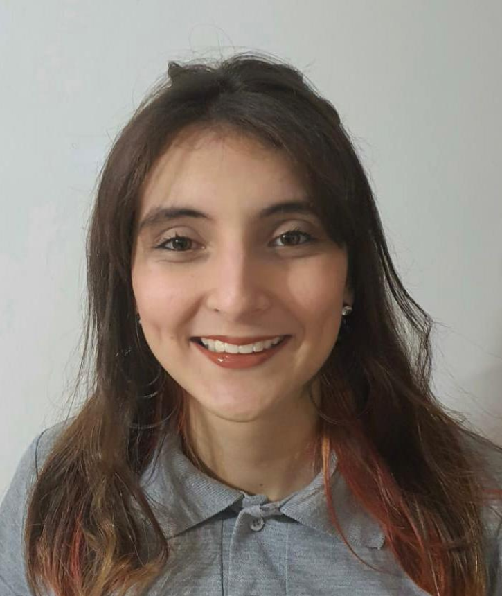
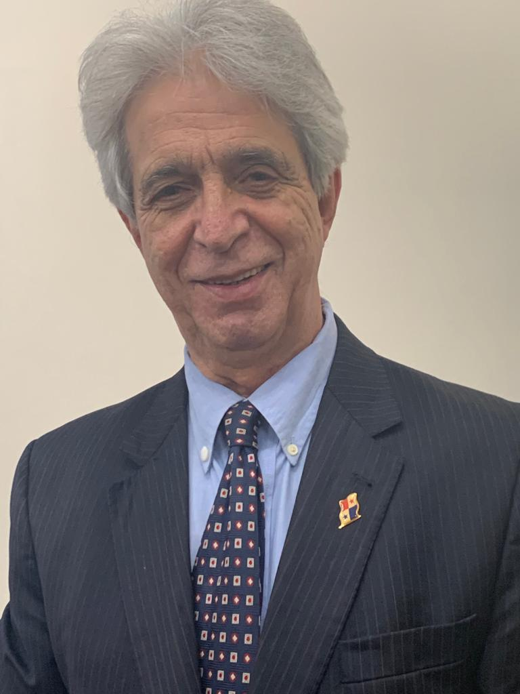

Equipe
Airton
Vasconcelos CEO IPAT
Vasconcelos CEO IPAT
Karla
Camarano
Gestora do IPAT
Camarano
Gestora do IPAT
Alcindo
Gonçalves Metodologia e Relações Institucionais
Gonçalves Metodologia e Relações Institucionais

Larissa
Almeida Analista de pesquisa IPAT
Almeida Analista de pesquisa IPAT
Arminda
Augusto Relações Institucionais
Augusto Relações Institucionais

Márcio
Calves Relações Institucionais
Calves Relações Institucionais